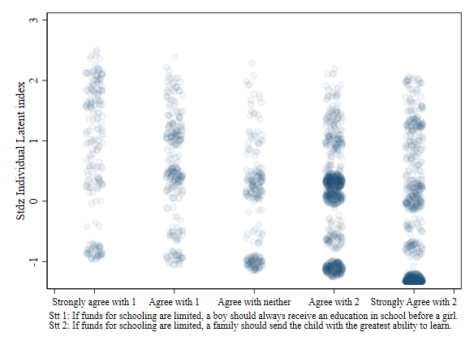

Estimating Patriarcal and Agency Indices based on ABS
Ethiopia
. clear all
. use "G:\Shared drives\levy_distribution\data\Ethiopia\Afrobarometer\abs_ethiopia2013.dta", clear
. ** Data processing
. encode region, gen(rcode)
. label define rcode 1 "Tigray" 2 "Afar" 3 "Amhara" ///
> 4 "Oromia" 5 "Somali" 6 "Benshangul-Gumz" ///
> 7 "Sounthern Nations" 8 "Gambella" 9 "Harari" ///
> 10 "Addis Ababa" 11 "Dire Dawa" , modify
. label values rcode rcode
.
. ** setting as missing: Do not know, missing and refused. Donot know could be Agree with Neither?
. foreach i in q22 q23 q24 {
2. clonevar c`i'=`i'
3. replace c`i'=. if c`i'==-1 | c`i'==9
4. replace c`i'=c`i'+1 if c`i'>=3
5. replace c`i'=3 if c`i'==6
6. }
(97 real changes made, 97 to missing)
(1,716 real changes made)
(4 real changes made)
(73 real changes made, 73 to missing)
(284 real changes made)
(7 real changes made)
(120 real changes made, 120 to missing)
(1,791 real changes made)
(235 real changes made)
. label define new2224 1 "Agree very strongly with 1" ///
> 2 "Agree with 1" ///
> 3 "Agree with neither" ///
> 4 "Agree with 2" ///
> 5 "Agree very strongly with 2"
.
. label values cq22 cq23 cq24 new2224
.
.
. gen comp_index = ((1-cq22/5)+ cq23/5 + (1-cq24/5) )/3
(169 missing values generated)
. label var comp_index "Composite index"
The index will be estimated using a method known as Generalized structural model equations.
The idea is that we have one latent variable, which represents individuals preference or attitudes toward patriartical preferences that influence how they answer particular questions.
if L1 is the latent index, it could affect how people answer questions q22, q23 and q24
. *** Using GSEM for Individual latent
. gsem (l1 -> cq22, family(ordinal) link(probit)) ///
> (l1 -> cq23, family(ordinal) link(probit)) ///
> (l1 -> cq24, family(ordinal) link(probit)) [pw=withinwt], latent(l1 ) var(l1@1) nolog
Generalized structural equation model Number of obs = 2,334
Response : cq22 Number of obs = 2,289
Family : ordinal
Link : probit
Response : cq23 Number of obs = 2,313
Family : ordinal
Link : probit
Response : cq24 Number of obs = 2,266
Family : ordinal
Link : probit
Log pseudolikelihood = -8429.2658
( 1) [/]var(l1) = 1
------------------------------------------------------------------------------
| Robust
| Coef. Std. Err. z P>|z| [95% Conf. Interval]
-------------+----------------------------------------------------------------
cq22 |
l1 | 1.979153 .5636695 3.51 0.000 .8743809 3.083925
-------------+----------------------------------------------------------------
cq23 |
l1 | -.670239 .0765978 -8.75 0.000 -.8203679 -.5201102
-------------+----------------------------------------------------------------
cq24 |
l1 | .3202531 .0440465 7.27 0.000 .2339234 .4065827
-------------+----------------------------------------------------------------
/cq22 |
cut1 | -2.461767 .5768123 -3.592298 -1.331235
cut2 | -1.52759 .3662889 -2.245504 -.8096774
cut3 | -1.516182 .363785 -2.229187 -.8031761
cut4 | .5021426 .1176503 .2715523 .732733
-------------+----------------------------------------------------------------
/cq23 |
cut1 | .1207525 .037896 .0464778 .1950272
cut2 | 1.376873 .0696638 1.240334 1.513411
cut3 | 1.395658 .0707435 1.257004 1.534313
cut4 | 2.034607 .1051009 1.828613 2.240601
-------------+----------------------------------------------------------------
/cq24 |
cut1 | -1.407204 .0511851 -1.507525 -1.306883
cut2 | -.8337615 .0385626 -.9093428 -.7581801
cut3 | -.4561685 .0353223 -.525399 -.386938
cut4 | .4551272 .034493 .3875222 .5227322
-------------+----------------------------------------------------------------
var(l1)| 1 (constrained)
------------------------------------------------------------------------------
. predict index_latent1, latent
(option ebmeans assumed)
(using 7 quadrature points)
. label var index_latent1 "Individual Latent index based on q22 q23 q24"
. qui: {
Below, I provide a simple scatter of how the index looks compared to the underlying questions
. set scheme s1color
. scatter sindex1 cq22, jitter(5) color(navy%5) ///
> xtitle("") ///
> xlabel(0.5 " " 1 "Strongly agree with 1" ///
> 2 "Agree with 1" ///
> 3 "Agree with neither" ///
> 4 "Agree with 2" ///
> 5 "Strongly Agree with 2" 5.5 " ", labsize(small) ) ///
> note("Stt 1: Men make better political leaders than women, and should be elected rather than
> women." ///
> "Stt 2: Women should have the same chance of being elected to political office
> as men.")
. graph export jpg1.png, replace
(note: file jpg1.png not found)
(file jpg1.png written in PNG format)
. scatter sindex1 cq23, jitter(5) color(navy%5) ///
> xtitle("") ///
> xlabel(0.5 " " 1 "Strongly agree with 1" ///
> 2 "Agree with 1" ///
> 3 "Agree with neither" ///
> 4 "Agree with 2" ///
> 5 "Strongly Agree with 2" 5.5 " ", labsize(small) ) ///
> note("Stt 1: In our country, women should have equal rights and receive the same treatment a
> s men do." ///
> "Stt 2: Women have always been subject to traditional laws and customs, and sho
> uld remain so.")
.
. graph export jpg2.png, replace
(note: file jpg2.png not found)
(file jpg2.png written in PNG format)
. scatter sindex1 cq24, jitter(5) color(navy%5) ///
> xtitle("") ///
> xlabel(0.5 " " 1 "Strongly agree with 1" ///
> 2 "Agree with 1" ///
> 3 "Agree with neither" ///
> 4 "Agree with 2" ///
> 5 "Strongly Agree with 2" 5.5 " ", labsize(small) ) ///
> note("Stt 1: If funds for schooling are limited, a boy should always receive an education in
> school before a girl." ///
> "Stt 2: If funds for schooling are limited, a family should send the child with
> the greatest ability to learn.")
.
. graph export jpg3.png, replace
(note: file jpg3.png not found)
(file jpg3.png written in PNG format)

. qui: {
We can also check how the indices distribute across regions.
. label var mean_index "Avg. Index by region"
. label var std_index "Std.Dev. Index by region"
.
. graph hbar mean_index std_index , over(rcode)
. graph export jpg4.png
(file jpg4.png written in PNG format)
. /***<img src="jpg4.png">***/
. graph hbox sindex1 [aw=withinwt], over(rcode)
. graph export jpg5.png
(file jpg5.png written in PNG format)
. /***<img src="jpg5.png">***/
.
. ** Simpler models using oprobit
For other analysis, we also make simple order probit regressions using a minimum set of explanatory variables.
. qui: {
. esttab m1 m2 m3 , nogaps se label wrap
--------------------------------------------------------------------
(1) (2) (3)
Q22. Men o~l Q23. Women~b Q24. Educa~b
--------------------------------------------------------------------
main
Q1. Age -0.00119 -0.00287 0.00408
(0.00274) (0.00288) (0.00270)
cage_2 0.0000617 0.0000528 0.00000189
(0.000112) (0.000111) (0.000109)
Male 0 0 0
(.) (.) (.)
Female 0.0844 -0.101 -0.0781
(0.0599) (0.0625) (0.0594)
No formal schooling 0 0 0
(.) (.) (.)
Informal schooling 0.316* -0.133 0.287*
only (0.133) (0.131) (0.133)
Some primary 0.186* -0.159* 0.269***
schooling (0.0770) (0.0795) (0.0780)
Primary school 0.235* -0.290* 0.373***
completed (0.111) (0.114) (0.106)
Some secondary 0.395** -0.462*** 0.502***
school/high school (0.125) (0.137) (0.113)
Secondary school 0.508*** -0.567*** 0.455***
completed/high sch~l (0.113) (0.124) (0.101)
Post-secondary 0.557*** -0.509** 0.365**
qualifications, no~y (0.128) (0.158) (0.132)
Some university 0.746*** -0.638** 0.609***
(0.174) (0.196) (0.151)
Tigray 0 0 0
(.) (.) (.)
Afar -0.319* 0.501*** -0.295*
(0.152) (0.140) (0.134)
Amhara -0.384*** -0.138 0.0435
(0.100) (0.0995) (0.0845)
Oromia -0.163 -0.109 -0.396***
(0.102) (0.0993) (0.0861)
Somali -0.0458 -0.121 -0.557***
(0.148) (0.140) (0.139)
Benshangul-Gumz -0.163 -0.220 0.503**
(0.187) (0.184) (0.186)
Sounthern Nations -0.297** -0.00923 -0.316***
(0.103) (0.0989) (0.0886)
Gambella -0.423** 0.225 -0.534***
(0.156) (0.150) (0.140)
Harari -0.230 -0.146 -0.684***
(0.142) (0.162) (0.144)
Addis Ababa 0.0621 -0.0924 0.105
(0.147) (0.151) (0.115)
Dire Dawa -0.277 -0.0153 -0.329*
(0.153) (0.155) (0.143)
--------------------------------------------------------------------
/
cut1 -1.166*** -0.296 -1.307***
(0.154) (0.159) (0.149)
cut2 -0.719*** 0.771*** -0.735***
(0.153) (0.155) (0.146)
cut3 -0.714*** 0.787*** -0.355*
(0.153) (0.156) (0.143)
cut4 0.225 1.352*** 0.561***
(0.153) (0.156) (0.144)
--------------------------------------------------------------------
Observations 2244 2264 2222
--------------------------------------------------------------------
Standard errors in parentheses
* p<0.05, ** p<0.01, *** p<0.001
For this simpler case, we also apply other methods to obtain the latent indices.
Namely, Factor analysis (FA), principal component analysi (PCA) and Multiple correspondance analysis (MCA).
. qui {
The above figure plots the values obtained using all this methods. THey show that all methods do not produce the same statistics, but the directions are correct.
. ** Ranking by index
.
. qui: {
The alternative to compare the indices is to look how they rank regions.
ANd based on the following, they rank them similarly, except for MCA.
. tabstat rsindex1 rifact ripca rimca rcomp_index, by(rcode)
Summary statistics: mean
by categories of: rcode (Province or region)
rcode | rsindex1 rifact ripca rimca rcomp_~x
-----------------+--------------------------------------------------
Tigray | 2 2 2 8 2
Afar | 11 10 11 11 11
Amhara | 9 9 9 4 5
Oromia | 7 8 8 7 9
Somali | 6 5 5 9 7
Benshangul-Gumz | 3 4 3 2 3
Sounthern Nation | 8 6 6 5 6
Gambella | 10 11 10 10 10
Harari | 5 7 7 3 8
Addis Ababa | 1 1 1 1 1
Dire Dawa | 4 3 4 6 4
-----------------+--------------------------------------------------
Total | 6.921207 6.76907 6.76865 5.689019 6.24057
--------------------------------------------------------------------
.
.
. *******************************************************
For the second index, Agency, I do a similar implementation using GSEM
Main difference is that we now have more variables to identify latents
. qui: {
. gsem (l1 -> cq25a, family(ordinal) link(probit)) ///
> (l1 -> cq25b, family(ordinal) link(probit)) ///
> (l1 -> cq26a, family(ordinal) link(probit)) ///
> (l1 -> cq26b, family(ordinal) link(probit)) ///
> (l1 -> cq26c, family(ordinal) link(probit)) ///
> (l1 -> cq26d, family(ordinal) link(probit)) ///
> (l1 -> cq26e, family(ordinal) link(probit)) ///
> (l1 -> cq29a, family(ordinal) link(probit)) ///
> (l1 -> cq29b, family(ordinal) link(probit)) ///
> (l1 -> cq29c, family(ordinal) link(probit)) ///
> (l1 -> cq27, family(binomial) link(probit)) [iw=withinwt], latent(l1 ) var(l1@1) nolog
Generalized structural equation model Number of obs = 2,386
Response : cq25a Number of obs = 2,229
Family : ordinal
Link : probit
Response : cq25b Number of obs = 2,208
Family : ordinal
Link : probit
Response : cq26a Number of obs = 2,339
Family : ordinal
Link : probit
Response : cq26b Number of obs = 2,309
Family : ordinal
Link : probit
Response : cq26c Number of obs = 2,262
Family : ordinal
Link : probit
Response : cq26d Number of obs = 2,217
Family : ordinal
Link : probit
Response : cq26e Number of obs = 2,210
Family : ordinal
Link : probit
Response : cq29a Number of obs = 2,248
Family : ordinal
Link : probit
Response : cq29b Number of obs = 2,225
Family : ordinal
Link : probit
Response : cq29c Number of obs = 2,232
Family : ordinal
Link : probit
Response : cq27 Number of obs = 2,386
Family : Bernoulli
Link : probit
Log likelihood = -16869.666
( 1) [/]var(l1) = 1
------------------------------------------------------------------------------
| Coef. Std. Err. z P>|z| [95% Conf. Interval]
-------------+----------------------------------------------------------------
cq25a |
l1 | .3752123 .0334121 11.23 0.000 .3097258 .4406988
-------------+----------------------------------------------------------------
cq25b |
l1 | .4374258 .0397292 11.01 0.000 .3595579 .5152937
-------------+----------------------------------------------------------------
cq26a |
l1 | 1.327166 .0838145 15.83 0.000 1.162893 1.49144
-------------+----------------------------------------------------------------
cq26b |
l1 | .9928878 .0498441 19.92 0.000 .895195 1.09058
-------------+----------------------------------------------------------------
cq26c |
l1 | -.0199611 .0489199 -0.41 0.683 -.1158425 .0759202
-------------+----------------------------------------------------------------
cq26d |
l1 | .214534 .0337024 6.37 0.000 .1484784 .2805895
-------------+----------------------------------------------------------------
cq26e |
l1 | .149649 .0663804 2.25 0.024 .0195458 .2797521
-------------+----------------------------------------------------------------
cq29a |
l1 | .7250868 .0508942 14.25 0.000 .625336 .8248377
-------------+----------------------------------------------------------------
cq29b |
l1 | .6312126 .0810821 7.78 0.000 .4722947 .7901305
-------------+----------------------------------------------------------------
cq29c |
l1 | .6909988 .089182 7.75 0.000 .5162053 .8657923
-------------+----------------------------------------------------------------
cq27 |
l1 | .5881777 .0444292 13.24 0.000 .5010981 .6752574
_cons | .8401157 .0354326 23.71 0.000 .7706692 .9095623
-------------+----------------------------------------------------------------
/cq25a |
cut1 | .324314 .0287546 .267956 .3806719
cut2 | .8092167 .0318776 .7467377 .8716957
cut3 | 2.013896 .0579296 1.900356 2.127436
-------------+----------------------------------------------------------------
/cq25b |
cut1 | .8305408 .0338399 .7642159 .8968657
cut2 | 1.205395 .0387909 1.129366 1.281423
cut3 | 2.378192 .07702 2.227235 2.529148
-------------+----------------------------------------------------------------
/cq26a |
cut1 | -2.136665 .0956982 -2.32423 -1.9491
cut2 | -1.12109 .0613675 -1.241368 -1.000811
cut3 | -.2126965 .0433926 -.2977445 -.1276484
cut4 | 1.196748 .0623471 1.07455 1.318946
-------------+----------------------------------------------------------------
/cq26b |
cut1 | -1.215643 .046976 -1.307714 -1.123572
cut2 | -.5774812 .0392174 -.6543459 -.5006166
cut3 | .1558497 .0364996 .0843119 .2273876
cut4 | 1.407743 .0518881 1.306044 1.509441
-------------+----------------------------------------------------------------
/cq26c |
cut1 | 1.58201 .0424928 1.498726 1.665294
cut2 | 1.865377 .0518861 1.763682 1.967072
cut3 | 2.087994 .0623993 1.965694 2.210294
cut4 | 2.34969 .0800448 2.192805 2.506575
-------------+----------------------------------------------------------------
/cq26d |
cut1 | .6572646 .029484 .599477 .7150522
cut2 | 1.144215 .034788 1.076032 1.212399
cut3 | 1.767418 .0492123 1.670964 1.863872
cut4 | 2.376186 .0811494 2.217136 2.535236
-------------+----------------------------------------------------------------
/cq26e |
cut1 | 1.990471 .0599883 1.872896 2.108046
cut2 | 2.373045 .084138 2.208138 2.537953
cut3 | 2.771124 .1293083 2.517685 3.024564
cut4 | 2.95569 .1614944 2.639166 3.272213
-------------+----------------------------------------------------------------
/cq29a |
cut1 | .3546805 .0338826 .2882717 .4210893
-------------+----------------------------------------------------------------
/cq29b |
cut1 | 1.925678 .082579 1.763826 2.08753
-------------+----------------------------------------------------------------
/cq29c |
cut1 | 2.01047 .0938666 1.826495 2.194445
-------------+----------------------------------------------------------------
var(l1)| 1 (constrained)
------------------------------------------------------------------------------
. qui : {
.
. kdensity2c sindex1 riagency, scheme(s1mono) level(10) zlabel(#5) ylabel(-1.32 -1/2 2.40)
. addplot: scatter sindex1 riagency, msize(tiny) mcolor(navy%10) legend(off)
. graph export jpg7.png
(file jpg7.png written in PNG format)
To see how this variable compares to the Patriacal index, a simple scatter plot, combined with bidimensional Kernel is provided above. Darker shades are points that have higher frequency.
This do suggest no relationship between both indices.
. qui {
. scatter mean_index mean_index2 if tag==1, mlab(rcode) mlabcolor(black)
. graph export jpg8.png
(file jpg8.png written in PNG format)
Finally, a simple plot comparing the regional averages of both indices is ploted. Not much systematic variation is observed, specially compared to the previous plot.
. kdensity2c sindex1 riagency , scheme(s1mono) level(10) zlabel(#5) ylabel(-1.32 -1/2 2.40)
. addplot: scatter mean_index mean_index2 if tag==1 ///
> , mlab(rcode) msize(small) color(maroon) mlabcolor(black) legend(off)
. graph export jpg9.png
(file jpg9.png written in PNG format)